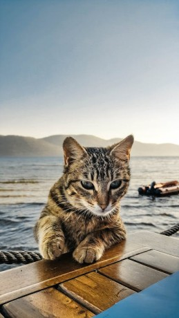
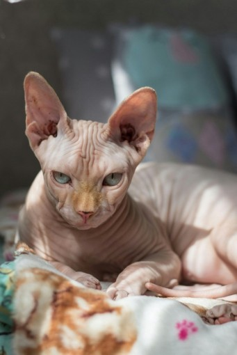
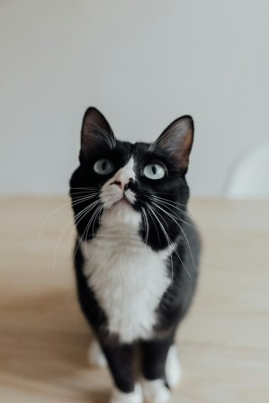

Intrested in learning about cat breeds? here is info on 4 cat breeds.
american shorthair
amarican shorthairs are a friendly breed of cat. They are often use as the basic image for cats.

Sphynx Cat
Sphynx cats are known for one thing, having no fur. The benifet to this is that they can't shed, however, you have to give them frequent baths to prevent excess oil.

mainecoon
mainecoons are cats with long fur and an incredibly friendly personality.

tuxedo cat
tuxedo cats are known for having a fur pattern that resembles a tuxeto. They have short fir and aren't hyperallergenic.
